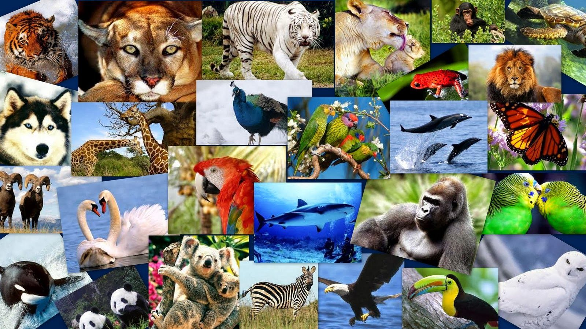

ESPECIES AMENAZADAS POR EL CAMBIO CLIMATICO
Pingüino Emperador (Aptenodytes forsteri)
Estos pingüinos requieren de hielo estable durante al menos nueve meses al año como plataforma para aparearse, incubar huevos, criar a sus polluelos y reemplazar sus plumas durante la muda de plumaje anual. También necesitan que haya huecos en el hielo marino para acceder a sus lugares de alimentación. Por ello, la especie es muy vulnerable frente a cualquier cambio del hielo marino. Si la capa de hielo se vuelve muy extensa, los adultos deben viajar largas distancias para llegar al mar abierto y a sus presas para alimentarse, lo que requiere mayor energía y afectaría su reproducción. Por el contrario, si el hielo empieza a escasear porque se forma muy tarde en agosto o desaparece muy temprano en primavera, debido a las altas temperaturas, los polluelos no alcanzan a desarrollar el plumaje impermeable que necesitan para sobrevivir el frío del océano. Científicos pronostican que, de seguir aumentando la temperatura de la Tierra, las poblaciones de pingüinos emperadores disminuirán drásticamente y muchas estarán al borde de la extinción para 2100.
Arrecifes de coral de aguas cálidas
Los arrecifes de coral sustentan algunos de los ecosistemas con mayor biodiversidad del planeta, proporcionando refugio, alimento y áreas de desove (espacios para poner huevos) a miles de especies marinas, y, por esa función, acaban siendo determinantes para la seguridad alimentaria y los medios de vida de millones de personas. Lamentablemente, en los últimos 30 años, la mitad de ellos han desaparecido por la contaminación, la sobrepesca, entre otras causas. A ello se suma el cambio climático que está acidificando y calentando los océanos, lo que ha provocado eventos de blanqueamiento de coral a gran escala y más seguidos, que podrían conducir a su extinción. La ciencia estima que, con un calentamiento global de 1,5 grados centígrados por encima de los niveles preindustriales, para 2050 más del 70% de los arrecifes de coral desaparecerán. Si el calentamiento alcanza los 2 grados, éstos prácticamente se extinguirán de la Tierra.
Leopardo de las nieves (Panthera uncia)
Altamente adaptados al frío, los leopardos de las nieves habitan las altas montañas del centro y sur de Asia desde hace más de dos millones de años, pero, lamentablemente, se estima que quedan tan solo 4.000 individuos. Una de las amenazas que los acecha es el cambio climático que está alterando los climas montañosos a los que están adaptados. Se estima que para 2070 sus hábitats se reducirán en un 23% y, en países como Bután y Nepal, más de un 80%. Además, con el aumento de temperatura, es probable que los bosques se expandan a costa de las praderas alpinas donde habitan, permitiendo la llegada de nuevos depredadores como lobos y leopardos comunes. Esto podría resultar en una intensa competencia por alimentos y recursos, la cual afectaría la supervivencia del leopardo de las nieves.